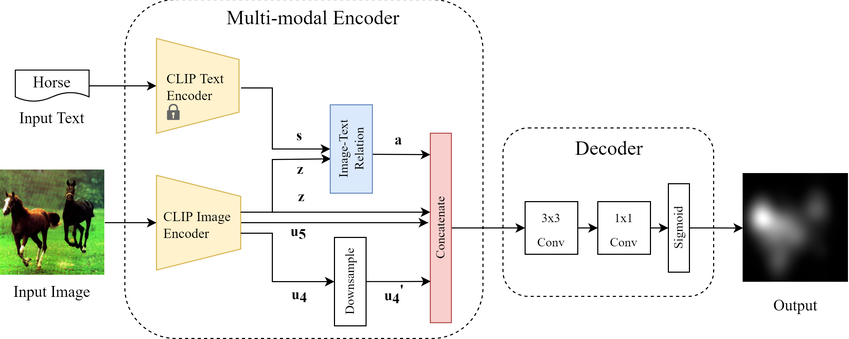

什么是模态编码？
by @karminski-牙医

(图片来自 researchgate.net)
模态编码（Modal Encoding）是处理多模态数据时，将原始数据转换为特定模态特征 (可以理解为一种统一格式) 表示的过程。其核心目标是保留数据模态特性，同时提取机器可理解的语义特征。
核心原理
模态编码典型处理流程包含：
- 信号预处理：将原始数据转换为标准格式
- 图像：归一化/尺寸调整
- 文本：分词/词干提取
- 音频：分帧/频谱转换
- 特征提取：使用模态专用编码器
- 视觉：CNN/ViT提取空间特征
- 文本：BERT/GPT提取语义特征
- 音频：HuBERT/Mel-Frequency特征提取
- 3D点云: ULIP-2提取特征
- 表示优化：通过池化/注意力机制获得紧凑表示
技术优势（系统实现视角）
- 特征解耦：允许不同模态独立优化编码器
- 并行处理：各模态编码可分布式执行
- 硬件适配：为特定模态选择最优计算单元（如GPU加速图像编码）
- 缓存复用：编码结果可离线预计算存储
- 渐进增强：支持编码器单独升级替换
实现挑战（工程化角度）
- 计算异构：不同模态编码器的资源需求差异
- 时序同步：流式场景下的多模态对齐难题
- 模态偏差：编码器过拟合特定数据分布
- 特征膨胀：高维特征带来的存储压力
- 版本控制：编码器更新导致的特征空间漂移
与向量嵌入的区别
| 维度 | 模态编码 | 向量嵌入 |
|---|---|---|
| 处理阶段 | 多模态处理前端 | 跨模态对齐后端 |
| 输入数据 | 原始信号（像素/声波/字符） | 模态编码输出的特征表示 |
| 输出特性 | 保留模态特性的特征图/序列 | 扁平化的跨模态可比向量 |
| 优化目标 | 最大化模态内信息保留 | 最小化跨模态语义距离 |
| 可解释性 | 高（对应具体感知特征） | 低（抽象语义表示） |
| 典型操作 | 卷积/池化/词干提取 | 线性投影/注意力融合 |
协同工作示例（图像-文本场景）：
- 图像通过CNN编码 → 输出14×14×512特征图（空间感知特征）
- 文本通过BERT编码 → 输出768维词向量序列（语法语义特征）
- 两者分别通过向量嵌入层 → 统一为1024维语义向量
- 在共享空间计算余弦相似度实现图文匹配 (这里使用余弦相似度的优点包括不受向量绝对大小影响只关注方向, 以及输出范围固定在[-1, 1]易于最后概率化处理)
这种分层设计既保留了模态特异性（编码阶段），又实现了跨模态交互（嵌入阶段），是当前多模态系统的典型架构范式。